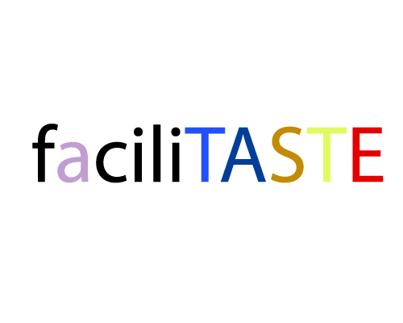

I am so excited to share my project with you for Share Fair,
Actually I made this project just because of LCL2
faciliTASTE
faciliTaste is an application that let you design your own smart devices like intelligent devices, wearable devices, tangible inactive devices and make city environment interactive, and everyone with basic understading of computers would be able to do that and Share it within its community and get feedback, you will do 4Ps within the application and online community,
It is at the early prototypingstage at the moment,
I made 2 videos one the original faciliTASTE, the other my description on it
One paper (a mini paper journal style pdf)
and some photos
Generally in my workflow of doing this I applied 4Ps itself to make an application for applying 4Ps
Paper Link: https://www.mediafire.com/?nbc7w7heh7q4bkb
Original Video Link:http://youtu.be/hkYqwuU3voo
and Download original video at: http://www.mediafire.com/watch/ahymlsve6r89lld/facilitaste.wmv
My description on faciliTASTE video link:
Download link : http://www.mediafire.com/watch/vstanacc86xpqpw/sasanSharefair.wmv
Abstarct
As technology and smart devices grow, thus every person should adopt him/herself to these technologies, and they are fused with every other industry and environments, up to now normal people had the ability to use them, and these technologies have been provided by high level companies in places like Silicon Valley, and the next step is to provide normal people with the ability to create their own smart and interactive devices, And faciliTASTE is aim to facilitate people with basic understanding of computers to make their own interactive devices, and professional programmers and device designers with the ability to work more on their ideas rather to spend times on coding and technical matters.
FaciliTASTE in this study implemented as early mockup prototype on Balsamiq Mockups, and the design model is based on 4Ps (Passion, Project, Play Peers) in the spiral of Imagine, Create, Play, Share, Reflect and ReImagine defined by Resnick (2007) and based on the lectures of P2PU’s Learning Creative Learning 2 from MIT Media Lab Life Long Kindergarten research group.
It made normal people and designers capable to draw their ideas as soon as they occur to their minds, this study had defined the major prototype of faciliTASTE, first is the Desktop application mockup prototype, next the web community web part of the application, which are the two core parts of this study, and pave the way for the coding implementation of it for the next stages.
and Meanwhile there are some photos:

Desktop application Prototype:
{kind=link}
Community website prototype:
{kind=link}
and some other images from doing my own 4Ps while doing this project:
Here is faciliTASTE sketches (imagine/Passion)
{kind=link}
Here is prototyping applcation Balsamique that I am in middle of prototyping in this image (Create and Play/Project and Play):
{kind=link}
Making Video in After effects (part of Sharing/ Peers)
{kind=link}
And finally post it on LCL (Sharing/Reflect/Peers):
{kind=link}
and Thanks alot for reading this